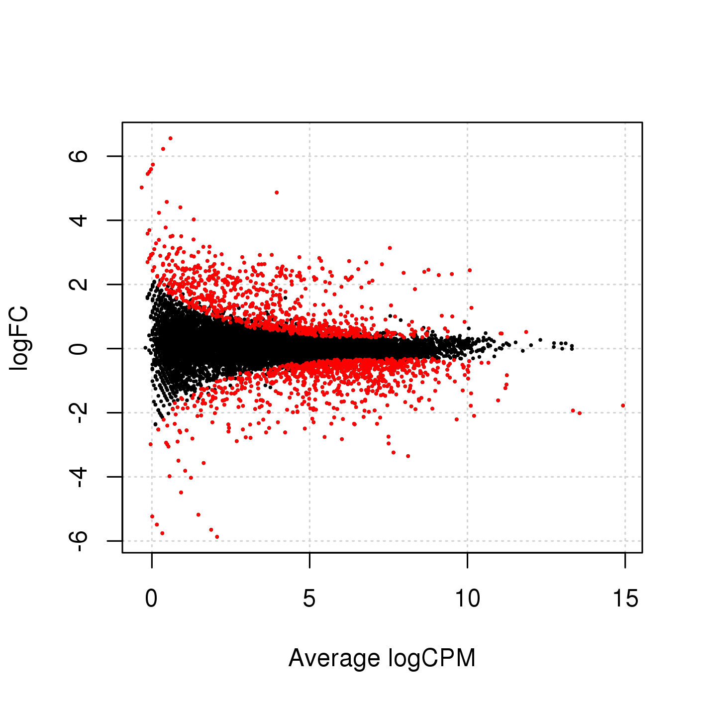
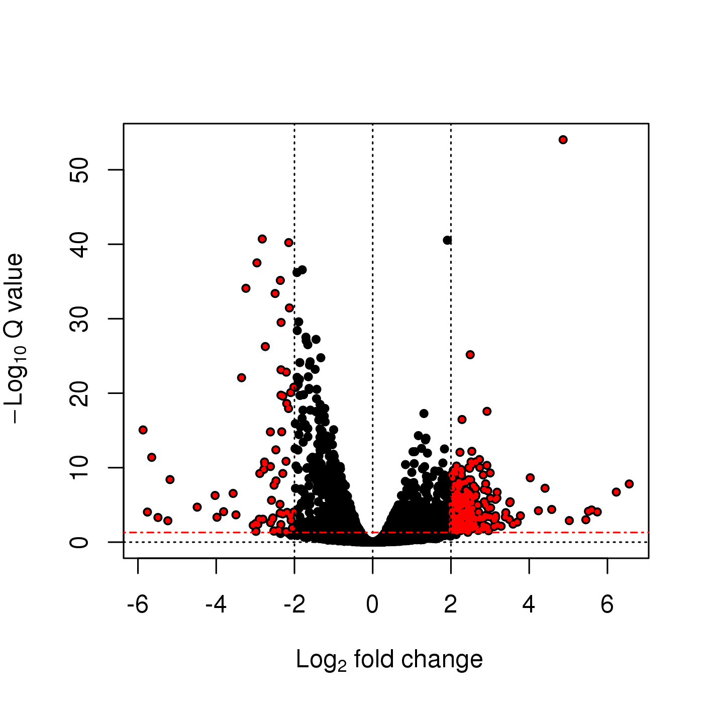
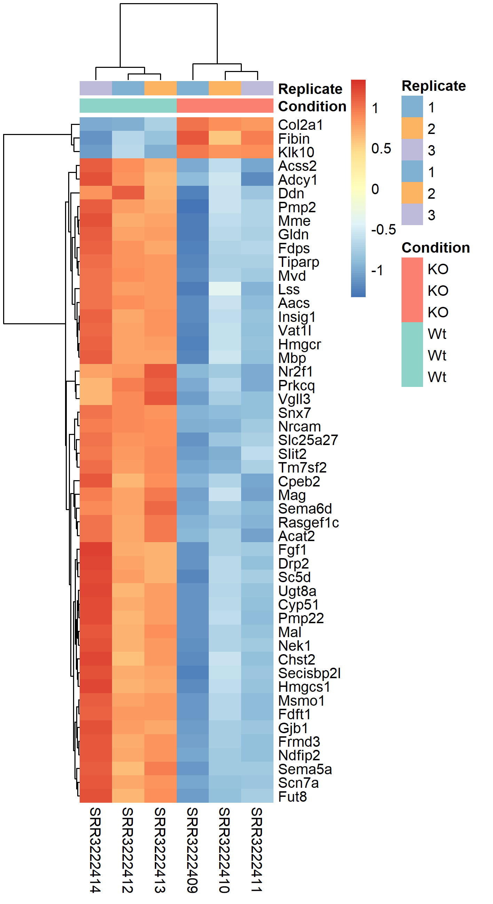

NGS Intro | RNA-Seq Lab

NBIS | 12-Sep-2018
RNA-seq has become a powerful approach to study the continually changing cellular transcriptome. Here, one of the most common questions is to identify genes that are differentially expressed between two conditions, e.g. controls and treatment. The main exercise in this tutorial will take you through a basic bioinformatic analysis pipeline to answer just that, it will show you how to find differentially expressed (DE) genes.
Main exercise
- 01 Check the quality of the raw reads with FastQC
- 02 Map the reads to the reference genome using Star
- 03 Assess the post-alignment quality using QualiMap
- 04 Count the reads overlapping with genes using featureCounts
- 05 Build a statistical model to find DE genes using edgeR from a prepared R script
RNA-seq experiment does not necessarily end with a list of DE genes. If you have time after completing the main exercise, try one (or more) of the bonus exercises. The bonus exercises can be run independently of each other, so choose the one that matches your interest. Bonus sections are listed below.
Bonus exercises
- 01 Functional annotation of DE genes using Gene Ontology database
- 02 Visualisation of RNA-seq BAM files using IGV genome browser
- 03 RNA-Seq figures and plots using R
- 04 De-novo transcriptome assembly using Trinity
Reading manuals, trying different tools/options, finding solutions to problems are daily routine work for bioinformaticians. By now, you should have some experience with using command line and various bioinformatic tools. So, in order to feel like a pro we encourage you to try your own solutions to the problems below, before checking the solution. Click the + button to see the suggested solution. Discuss with person next to you and ask us when in doubt. Remember that there is more than one way to complete a task. Have fun!
Markers: Tip Discuss Task
For Linux and Mac users, Log in to Uppmax in a way so that the generated graphics are exported via the network to your screen. Login in to Uppmax with X-forwarding enabled. This will allow any graphical interface that you start on your compute node to be exported to your computer.
ssh -Y username@rackham.uppmax.uu.se
ssh -Y computenode1 Data description
The data used in this exercise is from the paper: Poitelon, Yannick, et al. “YAP and TAZ control peripheral myelination and the expression of laminin receptors in Schwann cells.” Nature neuroscience 19.7 (2016): 879. In this study, YAP and TAZ genes were knocked-down in Schwann cells to study myelination, using the sciatic nerve in mice as a model.
Myelination is essential for nervous system function. Schwann cells interact with neurons and the basal lamina to myelinate axons using receptors, signals and transcription factors. Hippo pathway is a conserved pathway involved in cell contact inhibition, and it acts to promote cell proliferation and inhibits apoptosis. The pathway integrates mechanical signals (cell polarity, mechanotransduction, membrane tension) and gene expression response. In addition to its role in organ size control, the Hippo pathway has been implicated in tumorigenesis, for example its deregulation occurs in a broad range of human carcinomas. Transcription co-activators YAP and TAZ are two major downstream effectors of the Hippo pathway, and have redundant roles in transcriptional activation.
The material for RNA-seq was collected from 2 conditions (Wt and KO), each with 3 biological replicates.
| Accession | Condition | Replicate |
|---|---|---|
| SRR3222409 | KO | 1 |
| SRR3222410 | KO | 2 |
| SRR3222411 | KO | 3 |
| SRR3222412 | Wt | 1 |
| SRR3222413 | Wt | 2 |
| SRR3222414 | Wt | 3 |
For the purpose of this tutorial, to shorten the time needed to run various bioinformatics steps, we have downsampled the original files. We randomly sampled, without replacement, 25% reads from each sample, using fastq-sample from the toolset fastq-tools.
2 DGE workflow (Main exercise)
2.1 Preparation
2.1.1 Book a node
The normal node on compute cluster Rackham has 128 GB of RAM and 20 compute cores. We will use 8 cores per person for this session. This gives you about 51 GB RAM. If you have not done it yet, book a node now, or you will take away resources from your fellow course participants.
Book resources for RNA-Seq day 1.
salloc -A g2018018 -t 08:00:00 -p core -n 8 --reservation=g2018018_13_9Book resources for RNA-Seq day 2.
salloc -A g2018018 -t 08:00:00 -p core -n 8 --reservation=g2018018_14_92.1.2 Set-up directory
Setting up the directory structure is an important step as it helps to keep our raw data, intermediate data and results in an organised manner. All work must be carried out at this location /proj/g2018018/nobackup/[user]/ under your user name. All RNA-Seq related activities must be carried out in a sub-directory named rnaseq.
Set up the below directory structure in your project directory.
[user]\
rnaseq\
+-- 1_raw\
+-- 2_fastqc\
+-- 3_mapping\
+-- 4_qualimap\
+-- 5_dge\
+-- 6_multiqc\
+-- reference\
| +-- mouse\
| +-- mouse_chr11\
+-- scripts\mkdir rnaseq cd rnaseq mkdir 1_raw 2_fastqc 3_mapping 4_qualimap 5_dge 6_multiqc reference scripts cd reference mkdir mouse mkdir mouse_chr11 cd ..
The 1_raw directory will hold the raw fastq files. 2_fastqc will hold FastQC outputs. 3_mapping will hold the STAR mapping output files. 4_qualimap will hold the QualiMap output files. 5_dge will hold the counts from featureCounts and all differential gene expression related files. 6_multiqc will hold MultiQC outputs. reference directory will hold the reference genome, annotations and STAR indices.
It might be a good idea to open an additional terminal window. One to navigate through directories and another for scripting in the scripts directory.
2.1.3 Create symbolic links
We have the raw fastq files in this remote directory: /sw/share/compstore/courses/ngsintro/rnaseq/main/1_raw/. We are going to create symbolic links (soft-links) for these files from our 1_raw directory to the remote directory. We do this because normal copying of those files would be a waste of space since they are large files. Soft-linking files and folders allows us to work with those files as if they were actually there.
ln -s /sw/share/compstore/courses/ngsintro/rnaseq/main/1_raw/*.fastq.gz .Check if your files have linked correctly. You should be able to see as below.
[user@rackham2 1_raw]$ ll
SRR3222409_1.fastq.gz -> /sw/share/compstore/courses/ngsintro/rnaseq/main/1_raw/SRR3222409_1.fastq.gz
SRR3222409_2.fastq.gz -> /sw/share/compstore/courses/ngsintro/rnaseq/main/1_raw/SRR3222409_2.fastq.gz
SRR3222410_1.fastq.gz -> /sw/share/compstore/courses/ngsintro/rnaseq/main/1_raw/SRR3222410_1.fastq.gz
SRR3222410_2.fastq.gz -> /sw/share/compstore/courses/ngsintro/rnaseq/main/1_raw/SRR3222410_2.fastq.gz
SRR3222411_1.fastq.gz -> /sw/share/compstore/courses/ngsintro/rnaseq/main/1_raw/SRR3222411_1.fastq.gz
SRR3222411_2.fastq.gz -> /sw/share/compstore/courses/ngsintro/rnaseq/main/1_raw/SRR3222411_2.fastq.gz
SRR3222412_1.fastq.gz -> /sw/share/compstore/courses/ngsintro/rnaseq/main/1_raw/SRR3222412_1.fastq.gz
SRR3222412_2.fastq.gz -> /sw/share/compstore/courses/ngsintro/rnaseq/main/1_raw/SRR3222412_2.fastq.gz
SRR3222413_1.fastq.gz -> /sw/share/compstore/courses/ngsintro/rnaseq/main/1_raw/SRR3222413_1.fastq.gz
SRR3222413_2.fastq.gz -> /sw/share/compstore/courses/ngsintro/rnaseq/main/1_raw/SRR3222413_2.fastq.gz
SRR3222414_1.fastq.gz -> /sw/share/compstore/courses/ngsintro/rnaseq/main/1_raw/SRR3222414_1.fastq.gz
SRR3222414_2.fastq.gz -> /sw/share/compstore/courses/ngsintro/rnaseq/main/1_raw/SRR3222414_2.fastq.gz2.2 FastQC: Quality check
After receiving raw reads from a high throughput sequencing centre it is essential to check their quality. FastQC provides a simple way to do some quality control check on raw sequence data. It provides a modular set of analyses which you can use to get a quick impression of whether your data has any problems of which you should be aware before doing any further analysis.
Change into the 2_fastqc directory. Create soft-links for all fastq files from the 1_raw directory to here.
cd 2_fastqc ln -s ../1_raw/*.fastq.gz .
Load Uppmax modules bioinfo-tools and FastQC FastQC/0.11.5.
module load bioinfo-tools module load FastQC/0.11.5
Once the module is loaded, FastQC program is available through the command fastqc. Use fastqc --help to see the various parameters available to the program. We will use a simple command with only two arguments -t to specify number of threads and the name of the fastq file to analyse.
fastqc -t 8 filename.fastq.gzBased on the above command, write a bash loop to process all fastq files in the directory.
+for i in *.fastq.gz
do
echo "Running $i ..."
fastqc -t 8 "$i"
done
Writing multi-line commands though the terminal can be a pain. Therefore, we will run larger scripts from a bash script file. Move to your scripts directory and create a new file named fastqc.sh and give executable permissions to this file.
cd scripts touch fastqc.sh chmod +x fastqc.sh
Then add the shebang header and the for-loop to this file. Use nano or gedit to edit fastqc.sh.
#!/bin/bash
for i in *.fastq.gz
do
echo "Running $i ..."
fastqc -t 8 "$i"
done
While standing in the 2_fastqc directory, run the file fastqc.sh.
cd 2_fastqc ../scripts/fastqc.sh
After the fastqc run, there should be a .zip file and a .html file for every fastq file. The .html file is the report that you need. Open the .html in the browser and view it. You only need to do this for one file now. We will do a comparison with all samples when using the MultiQC tool.
firefox file.html & Adding & at the end sends that process to the background, so that the console is free to accept new commands.
Optional
Download the .html file to your computer and view it.
All users can use an SFTP browser like Filezilla or Cyberduck for a GUI interface. Windows users can also use the MobaXterm SFTP file browser to drag and drop. Linux and Mac users can use SFTP or SCP by running the below command in a LOCAL terminal and NOT on Uppmax.
scp user@rackham.uppmax.uu.se:/proj/g2018018/nobackup/[user]/2_fastqc/SRR3222409_1_fastqc.html ./Go back to the FastQC website and compare your report with the sample report for Good Illumina data and Bad Illumina data.
Discuss based on your reports, whether your data is of good enough quality and/or what steps are needed to fix it.
2.3 STAR: Mapping
After verifying that the quality of the raw sequencing reads is acceptable, we will map the reads to the reference genome. There are many mappers/aligners available, so it may be good to choose one that is adequate for your type of data. Here, we will use a software called STAR (Spliced Transcripts Alignment to a Reference) as it is good for generic purposes, fast, easy to use and has been shown to outperform many of the other tools when aligning 2x76bp paired-end data. Before we begin mapping, we need to obtain genome reference sequence (.fasta file) and a corresponding annotation file (.gtf) and build a STAR index. Due to time constrains, we will practice on chromosome 11 only. Then we will use the pre-prepared index for the entire genome to do the actual mapping.
2.3.1 Get reference
It is best if the reference genome (.fasta) and annotation (.gtf) files come from the same source to avoid potential naming conventions problems. It is also good to check in the manual of the aligner you use for hints on what type of files are needed to do the mapping.
What is the idea behind building STAR index? What files are needed to build one? Where do we take them from? Could one use a STAR index that was generated before? Browse through Ensembl to find the files needed. Note that we are working with Mouse (Mus musculus).
Move into the reference directory and download the Chr 11 genome (.fasta) file and the genome-wide annotation file (.gtf) from Ensembl.
cd reference wget ftp://ftp.ensembl.org/pub/release-93/fasta/mus_musculus/dna/Mus_musculus.GRCm38.dna.chromosome.11.fa.gz wget ftp://ftp.ensembl.org/pub/release-93/gtf/mus_musculus/Mus_musculus.GRCm38.93.gtf.gz
Unzip the files for use.
+gunzip Mus_musculus.GRCm38.dna.chromosome.11.fa.gz gunzip Mus_musculus.GRCm38.93.gtf.gz
You should now have the files as below.
[user@rackham2 reference]$ ll
drwxrwsr-x 2 user g2018018 4.0K Sep 4 19:33 mouse
drwxrwsr-x 2 user g2018018 4.0K Sep 4 19:32 mouse_chr11
-rw-rw-r-- 1 user g2018018 742M Sep 4 19:31 Mus_musculus.GRCm38.93.gtf
-rw-rw-r-- 1 user g2018018 119M Sep 4 19:31 Mus_musculus.GRCm38.dna.chromosome.11.fa2.3.2 Build index
Move into the reference directory if not already there. Load module STAR version 2.5.2b. Remember to load bioinfo-tools if you haven’t done so already.
module load bioinfo-tools
module load star/2.5.2b To search for other available versions of STAR, use module spider star.
We will use the script below to build the index.
module load star/2.5.2b
star \
--runMode genomeGenerate \
--runThreadN 8 \
--genomeDir ./mouse_chr11 \
--genomeFastaFiles ./Mus_musculus.GRCm38.dna.chromosome.11.fa \
--sjdbGTFfile ./Mus_musculus.GRCm38.93.gtfCreate a new bash script in your scripts directory named star_index.sh using the above lines. Remember to set executable permissions on bash scripts to run them.
The above script means that STAR should run in genomeGenerate mode to build an index. It should use 8 available threads for computation. The output files must be directed to the indicated directory. The paths to the .fasta file and the annotation file (.gtf) is also shown. Modify the bash script file to look like below.
#!/bin/bash
# load module
module load bioinfo-tools
module load star/2.5.2b
star \
--runMode genomeGenerate \
--runThreadN 6 \
--genomeDir ./mouse_chr11 \
--genomeFastaFiles ./Mus_musculus.GRCm38.dna.chromosome.11.fa \
--sjdbGTFfile ./Mus_musculus.GRCm38.93.gtfRun the script from the reference directory.
../scripts/star_index.shOnce the indexing is complete, move into the mouse_chr11 directory and make sure you have all the files.
[user@rackham2 mouse_chr11]$ ll
-rw-rw-r-- 1 user g2018018 10 Sep 4 19:31 chrLength.txt
-rw-rw-r-- 1 user g2018018 13 Sep 4 19:31 chrNameLength.txt
-rw-rw-r-- 1 user g2018018 3 Sep 4 19:31 chrName.txt
-rw-rw-r-- 1 user g2018018 12 Sep 4 19:31 chrStart.txt
-rw-rw-r-- 1 user g2018018 1.7M Sep 4 19:33 exonGeTrInfo.tab
-rw-rw-r-- 1 user g2018018 805K Sep 4 19:33 exonInfo.tab
-rw-rw-r-- 1 user g2018018 56K Sep 4 19:33 geneInfo.tab
-rw-rw-r-- 1 user g2018018 121M Sep 4 19:33 Genome
-rw-rw-r-- 1 user g2018018 553 Sep 4 19:31 genomeParameters.txt
-rw-rw-r-- 1 user g2018018 967M Sep 4 19:33 SA
-rw-rw-r-- 1 user g2018018 1.5G Sep 4 19:33 SAindex
-rw-rw-r-- 1 user g2018018 522K Sep 4 19:33 sjdbInfo.txt
-rw-rw-r-- 1 user g2018018 463K Sep 4 19:33 sjdbList.fromGTF.out.tab
-rw-rw-r-- 1 user g2018018 463K Sep 4 19:33 sjdbList.out.tab
-rw-rw-r-- 1 user g2018018 480K Sep 4 19:33 transcriptInfo.tabThis index for chr11 was created just to familiarise with the steps. We will use the index built on the whole genome for downstream exercises. The index for the whole genome was prepared for us before class in the very same way as for the chromosome 11 in steps above. It just requires more time (ca. 4h) to run. The index is found here: /sw/share/compstore/courses/ngsintro/rnaseq/reference/mouse/.
Soft-link all the files inside /sw/share/compstore/courses/ngsintro/rnaseq/reference/mouse/ to the directory named mouse which is inside your rnaseq/reference/.
cd mouse ln -s /sw/share/compstore/courses/ngsintro/rnaseq/reference/mouse/* .
2.3.3 Map reads
Now that we have the index ready, we are ready to map reads. Move to the directory 3_mapping and soft-link all fastq files from the 1_raw directory.
cd 3_mapping ln -s ../1_raw/* .
These are the parameters that we want to specify for the STAR mapping run:
- Run mode is now
alignReads - Specify the full genome index path
- Specify the number of threads
- We must indicate the the input is gzipped and must be uncompressed
- Indicate read1 and read2 since we have paired-end reads
- Specify the annotation (.gtf) file
- Specify an output file name
- Specify that the output must be BAM and the reads must be sorted by coordinate
Refer the STAR manual and identify the relevant parameters. You can also use star --help to see help. Then, try to write the command.
You should have something that looks like this:
+star \ --runMode alignReads \ --genomeDir "../reference/mouse" \ --runThreadN 8 \ --readFilesCommand zcat \ --readFilesIn sample_1.fastq.gz sample_2.fastq.gz \ --sjdbGTFfile "../reference/Mus_musculus.GRCm38.93.gtf" \ --outFileNamePrefix "sample1" \ --outSAMtype BAM SortedByCoordinate
We can generalise the above script to be used as a bash script to read any two input files and to automatically create the output filename.
+#!/bin/bash
# create output file name
prefix="${1/_*/}"
star \
--runMode alignReads \
--genomeDir "../reference/mouse" \
--runThreadN 8 \
--readFilesCommand zcat \
--readFilesIn $1 $2 \
--sjdbGTFfile "../reference/Mus_musculus.GRCm38.93.gtf" \
--outFileNamePrefix "$prefix" \
--outSAMtype BAM SortedByCoordinate
In the above script, the two input fastq files as passed in as parameters $1 and $2. The output filename is automatically created using this line prefix='${1/_*/}' from input filename of $1. For example, a file named sample_1.fastq.gz will have the _1.fastq.gz removed and the prefix will be just sample.
Now create a new bash script file named star_align.sh in your scripts directory and add the above commands to it.
#!/bin/bash
# create output file name
prefix="${1/_*/}"
star \
--runMode alignReads \
--genomeDir "../reference/mouse" \
--runThreadN 8 \
--readFilesCommand zcat \
--readFilesIn $1 $2 \
--sjdbGTFfile "../reference/Mus_musculus.GRCm38.93.gtf" \
--outFileNamePrefix "$prefix" \
--outSAMtype BAM SortedByCoordinate
Now we can run the bash script like below while standing in the 3_mapping directory.
../scripts/star_align.sh sample_1.fastq.gz sample_2.fastq.gzNow, do the same for the other read pairs as well.
Optional
Try to write a bash loop script to iterate over all fastq files in the directory and run the mapping using the star_align.sh script. Note that there is a bit of a tricky issue here. You need to use two fastq files (_1 and _2) per run rather than one file.
## find only files for read 1 and extract the sample name
lines=$(find *_1.fastq.gz | sed "s/_1.fastq.gz//")
for i in ${lines}
do
## use the sample name and add suffix (_1.fastq.gz or _2.fastq.gz)
echo "Mapping ${i}_1.fastq.gz ${i}_2.fastq.gz ..."
../scripts/star_align.sh "${i}_1.fastq.gz ${i}_2.fastq.gz"
done
At the end of the mapping jobs, you should have the following list of output files for every sample:
[user@rackham2 3_mapping]$ ll
-rw-rw-r-- 1 user g2018018 628M Sep 6 00:54 SRR3222409Aligned.sortedByCoord.out.bam
-rw-rw-r-- 1 user g2018018 1.9K Sep 6 00:54 SRR3222409Log.final.out
-rw-rw-r-- 1 user g2018018 21K Sep 6 00:54 SRR3222409Log.out
-rw-rw-r-- 1 user g2018018 482 Sep 6 00:54 SRR3222409Log.progress.out
-rw-rw-r-- 1 user g2018018 3.6M Sep 6 00:54 SRR3222409SJ.out.tab
drwx--S--- 2 user g2018018 4.0K Sep 6 00:50 SRR3222409_STARgenomeThe .bam file contains the alignment of all reads to the reference genome in binary format. BAM files are not human readable directly. To view a BAM file in text format, you can use samtools view functionality.
module load samtools/1.6
samtools view SRR3222409Aligned.sortedByCoord.out.bam | head
SRR3222409.8816556 163 1 3199842 255 101M = 3199859 116 TTTTAAAGTTTTACAAGAAAAAAAATCAGATAACCGAGGAAAATTATTCATTATGAAGTACTACTTTCCACTTCATTTCATCACAAATTGTAACTTACTTA DDBDDIIIHIIHHHIHIHHIIIIIDHHIIIIIIIIIIIIIIHIIIIHIIIEHHIIIHIIIIGIIIIIIIIIIIIIIHIIHEHIIIIIIHIIIIIHIIIIII NH:i:1 HI:i:1 AS:i:198 nM:i:0
SRR3222409.8816556 83 1 3199859 255 99M = 3199842 -116AAAAAAAATCAGATAACCGAGGAAAATTATTCATTATGAAGTACTACTTTCCACTTCATTTCATCACAAATTGTAACTTACTTAACTGACCAAAAAAAC IIIIIHHIHHIIIIHHEEHIIIHIIHHHIHIIIIIIIHIHHIIIIIIHIIIIIIIIHHHHHIIIIIHIHHIIIHIHHFHHIIHIIIIHCIIIIHDDD@D NH:i:1 HI:i:1 AS:i:198 nM:i:0
SRR3222409.2149741 163 1 3199933 255 101M = 3200069 237 AACTTACTTAACTGACCAAAAAAACTATGGTACTGCAGTATAGCAAATACTCCACACACTGTGCTTTGAGCTAGAGCACTTGGAGTCACTGCCCAGGGCAG ABDDDHHIIIIIIIIIIIIIIIHHIIIIIIIIIIIIIIIIIIIIIIII<<FHIHGHIIIIGIHEHIIIIIGIIIIIIIIIIIIIIHIIIIIHIIIIHIIIH NH:i:1 HI:i:1 AS:i:200 nM:i:0Can you identify what some of these columns are?
The Log.final.out file gives a summary of the mapping run. This file is used by MultiQC later to collect mapping statistics.
Inspect one of the mapping log files to identify the number of uniquely mapped reads and multi-mapped reads.
+cat SRR3222409Log.final.out
Started job on | Sep 08 14:03:46
Started mapping on | Sep 08 14:07:01
Finished on | Sep 08 14:09:05
Mapping speed, Million of reads per hour | 154.78
Number of input reads | 5331353
Average input read length | 201
UNIQUE READS:
Uniquely mapped reads number | 4532497
Uniquely mapped reads % | 85.02%
Average mapped length | 199.72
Number of splices: Total | 2628072
Number of splices: Annotated (sjdb) | 2608823
Number of splices: GT/AG | 2604679
Number of splices: GC/AG | 15762
Number of splices: AT/AC | 2422
Number of splices: Non-canonical | 5209
Mismatch rate per base, % | 0.18%
Deletion rate per base | 0.02%
Deletion average length | 1.49
Insertion rate per base | 0.01%
Insertion average length | 1.37
MULTI-MAPPING READS:
Number of reads mapped to multiple loci | 493795
% of reads mapped to multiple loci | 9.26%
Number of reads mapped to too many loci | 8241
% of reads mapped to too many loci | 0.15%
UNMAPPED READS:
% of reads unmapped: too many mismatches | 0.00%
% of reads unmapped: too short | 5.51%
% of reads unmapped: other | 0.06%
CHIMERIC READS:
Number of chimeric reads | 0
% of chimeric reads | 0.00%
The BAM file names can be simplified by renaming them. This command renames all BAM files.
rename "Aligned.sortedByCoord.out" "" *.bamNext, we need to index these BAM files. Indexing creates .bam.bai files which are required by many downstream programs to quickly and efficiently locate reads anywhere in the BAM file.
Index all BAM files.
module load samtools/1.6
samtools index SRR3222409.bamFinally, we should have BAM files and their index files.
[user@rackham2 3_mapping]$ ll
-rw-rw-r-- 1 user g2018018 628M Sep 6 00:54 SRR3222409.bam
-rw-rw-r-- 1 user g2018018 1.8M Sep 6 01:22 SRR3222409.bam.bai If you are running short of time or unable to run the mapping, you can copy over results for all samples that have been prepared for you before class. They are available at this location: /sw/share/compstore/courses/ngsintro/rnaseq/main/3_mapping/.
cp -r /sw/share/compstore/courses/ngsintro/rnaseq/main/3_mapping/* /proj/g2018018/nobackup/[user]/rnaseq/3_mapping/2.4 QualiMap: Post-alignment QC
Some important quality aspects, such as saturation of sequencing depth, read distribution between different genomic features or coverage uniformity along transcripts, can be measured only after mapping reads to the reference genome. One of the tools to perform this post-alignment quality control is QualiMap. QualiMap examines sequencing alignment data in SAM/BAM files according to the features of the mapped reads and provides an overall view of the data that helps to the detect biases in the sequencing and/or mapping of the data and eases decision-making for further analysis.
Move into the 4_qualimap directory and soft-link all the BAM files (.bam) and their indices (.bam.bai) from directory 3_mapping.
ln -s ../3_mapping/*.bam . ln -s ../3_mapping/*.bam.bai .
Read through QualiMap documentation and see if you can figure it out how to run it to assess post-alignment quality on the RNA-seq mapped samples. Here is the RNA-Seq specific tool explanation. The tool is already installed on Uppmax as a module.
Load the QualiMap module version 2.2.1 and create a bash script named qualimap.sh in your scripts directory.
Use the script below for the actual run. We have some additions.
+#!/bin/bash
# load modules
module load bioinfo-tools
module load QualiMap/2.2.1
prefix="${1/.bam/}"
export DISPLAY=""
qualimap rnaseq -pe \
-bam $1 \
-gtf "../reference/Mus_musculus.GRCm38.93.gtf" \
-outdir "$prefix" \
-outfile "$prefix" \
-outformat "HTML" \
--java-mem-size=50G >& "${prefix}-qualimap.log"
The line prefix="${1/.bam/}" is used to remove .bam from the input filename and create a prefix which will be used to label output. The export DISPLAY="" is used to run JAVA application in headless mode or else throws an error about X11 display. The last part >& "${prefix}-qualimap.log" saves the standard-out as a log file.
Write a bash loop to run the qualimap script over all BAM files. Run the loop script in the directory 4_qualimap.
for i in *.bam
do
echo "Running QualiMap on $i ..."
../scripts/qualimap.sh $i
done
Qualimap should have created a directory for every BAM file. Inside every directory, you should see:
[user@rackham2 4_qualimap]$ ll
drwxrwxr-x 2 user g2018018 4.0K Sep 14 17:24 css
drwxrwxr-x 2 user g2018018 4.0K Sep 14 17:24 images_qualimapReport
-rw-rw-r-- 1 user g2018018 11K Sep 14 17:24 qualimapReport.html
drwxrwxr-x 2 user g2018018 4.0K Sep 14 17:24 raw_data_qualimapReport
-rw-rw-r-- 1 user g2018018 1.2K Sep 14 17:24 rnaseq_qc_results.txtInspect the HTML output file and try to make sense of it.
+firefox qualimapReport.html &
If you are running out of time or were unable to run QualiMap, you can also copy pre-run QualiMap output from this location: /sw/share/compstore/courses/ngsintro/rnaseq/main/4_qualimap/.
cp -r /sw/share/compstore/courses/ngsintro/rnaseq/main/4_qualimap/* /proj/g2018018/nobackup/[user]/rnaseq/4_qualimap/Check the QualiMap report for one sample and discuss if the sample is of good quality. You only need to do this for one file now. We will do a comparison with all samples when using the MultiQC tool.
2.5 featureCounts: Counting reads
After ensuring mapping quality, we can move on to enumerating reads mapping to genomic features of interest. Here we will use featureCounts, an ultrafast and accurate read summarization program, that can count mapped reads for genomic features such as genes, exons, promoter, gene bodies, genomic bins and chromosomal locations.
Move into the 5_dge directory and soft-link all the BAM files (.bam) and their indices (.bam.bai) from directory 3_mapping.
cd 5_dge ln -s ../3_mapping/*.bam . ln -s ../3_mapping/*.bam.bai .
Read featureCounts documentation and see if you can figure it out how to use paired-end reads using an unstranded library to count fragments overlapping with exonic regions and summarise over genes.
Load the subread module version 1.5.2 on Uppmax. Create a bash script named featurecounts.sh in the directory scripts.
We could run featureCounts on each BAM file, produce a text output for each sample and combine the output. But the easier way is to provide a list of all BAM files and featureCounts will combine counts for all samples into one text file.
Below is the script that we will use:
+#!/bin/bash # load modules module load bioinfo-tools module load subread/1.5.2 featureCounts \ -a "../reference/Mus_musculus.GRCm38.93.gtf" \ -o "counts.txt" \ -F "GTF" \ -t "exon" \ -g "gene_id" \ -p \ -s 0 \ -T 8 \ *.bam
In the above script, we indicate the path of the annotation file (-a "../reference/Mus_musculus.GRCm38.93.gtf"), specify the output file name (-o "counts.txt"), specify that that annotation file is in GTF format (-F "GTF"), specify that reads are to be counted over exonic features (-t "exon") and summarised to the gene level (-g "gene_id"). We also specify that the reads are paired-end (-p), the library is unstranded (-s 0) and the number of threads to use (-T 8).
Run the featurecounts bash script in the directory 5_dge.
cd 5_dge ../scripts/featurecounts.sh
You should have two files:
[user@rackham2 5_dge]$ ll
-rw-rw-r-- 1 user g2018018 2.8M Sep 15 11:05 counts.txt
-rw-rw-r-- 1 user g2018018 658 Sep 15 11:05 counts.txt.summaryInspect the files and try to make sense of them.
You can remove the softlinks now. They just clutter the directory and we don’t need them anymore.
find -maxdepth 1 -type l -delete2.6 MultiQC: Combined QC report
We will use the tool MultiQC to crawl through the output, log files etc from FastQC, STAR, QualiMap and featureCounts to create a combined QC report.
Run MultiQC as shown below in the 6_multiqc directory.
module load bioinfo-tools
module load MultiQC/1.6
multiqc --interactive ../You should have two files:
[user@rackham2 6_multiqc]$ ll
drwxrwsr-x 2 user g2018018 4.0K Sep 6 22:33 multiqc_data
-rw-rw-r-- 1 user g2018018 1.3M Sep 6 22:33 multiqc_report.html Open the MultiQC HTML report using firefox and/or transfer to your computer and inspect the report.
firefox multiqc_report.html &
2.7 Differential gene expression
The easiest way to perform differential expression is to use one of the statistical packages, within R environment, that were specifically designed for analyses of read counts arising from RNA-seq, SAGE and similar technologies. Here, we will one of such packages called edgeR. Learning R is beyond the scope of this course so we prepared basic ready to run R scripts to find DE genes between conditions KO and Wt.
Move to the 5_dge directory and load R modules for use.
cd 5_dge
module load R/3.4.3
module load R_packages/3.4.3Copy the following files to the 5_dge directory.
/sw/share/compstore/courses/ngsintro/rnaseq/main/5_dge/annotations.txt/sw/share/compstore/courses/ngsintro/rnaseq/main/5_dge/dge.R
Make sure you have the counts.txt file from featureCounts. If not, you can copy this file too.
/sw/share/compstore/courses/ngsintro/rnaseq/main/5_dge/counts.txt
cp /sw/share/compstore/courses/ngsintro/rnaseq/main/5_dge/annotations.txt .
cp /sw/share/compstore/courses/ngsintro/rnaseq/main/5_dge/dge.R .
cp /sw/share/compstore/courses/ngsintro/rnaseq/main/5_dge/counts.txt .Now, run the R script.
Rscript dge.RThis should have produced the following output files:
[user@rackham2 5_dge]$ ll
-rw-rw-r-- 1 user g2018018 8.9M Nov 29 16:31 dge_data.RData
-rw-rw-r-- 1 user g2018018 2.6M Nov 29 16:31 dge_results.txt Copy the results text file (dge_results.txt) to your computer and inspect the results. What are the columns? How many differentially expressed genes are present at an FDR cutoff of 0.05? How many genes are upregulated and how many are down-regulated? How does this change if we set a fold-change cut-off of 1?
Open in a spreadsheet editor like Microsoft Excel or LibreOffice Calc.
If you do not have the results or were unable to run the DGE step, you can copy these two here which will be required for optionally; functional annotation.
cp /sw/share/compstore/courses/ngsintro/rnaseq/main/5_dge/dge_results.txt .
cp /sw/share/compstore/courses/ngsintro/rnaseq/main/5_dge/dge_data.Rdata .3 Bonus exercises
These exercises are completely optional and to be run only if you have time and if it interests you.
Markers: Run locally Run on Uppmax
3.1 Functional annotation
In this part of the exercise we will address the question which biological processes are affected in the experiment; in other words we will functionally annotate the results of the analysis of differential gene expression (performed in the main part of the exercise). We will use Gene Ontology (GO) and Reactome databases.
When performing this type of analysis, one has to keep in mind that the analysis is only as accurate as the annotation available for your organism. So, if working with non-model organisms which do have experimentally-validated annotations (computationally inferred), the results may not be fully reflecting the actual situation.
There are many methods to approach the question as to which biological processes and pathways are over-represented amongst the differentially expressed genes, compared to all the genes included in the DE analysis. They use several types of statistical tests (e.g. hypergeometric test, Fisher’s exact test etc.), and many have been developed with microarray data in mind. Not all of these methods are appropriate for RNA-seq data, which as you remember from the lecture, exhibit length bias in power of detection of differentially expressed genes (i.e. longer genes, which tend to gather more reads, are more likely to be detected as differentially expressed than shorter genes, solely because of the length).
We will use the R / Bioconductor package goseq, specifically designed to work with RNA-seq data. This package provides methods for performing Gene Ontology and pathway analysis of RNA-seq data, taking length bias into account.
In this part, we will use the same data as in the main workflow. The starting point of the exercise is the file with results of the differential expression produced in the main part of the exercise.
Running functional annotation is typically not computationally heavy and it may be easier to run it on your local computer. Therefore this module can be performed on Uppmax or on your local computer. If you choose to run locally on your computer, you need have R statistical programming language installed. An optional graphical interface to R such as RStudio is also recommended.
3.1.1 Preparation
Install required R packages by running the script below in R.
source("http://bioconductor.org/biocLite.R")
biocLite(c("goseq","GO.db","reactome.db","org.Mm.eg.db")) Copy this directory /sw/share/compstore/courses/ngsintro/rnaseq/bonus/funannot to your computer by running the below command in a LOCAL terminal and NOT on Uppmax.
scp -r user@rackham.uppmax.uu.se:/sw/share/compstore/courses/ngsintro/rnaseq/bonus/funannot ./Alternatively, all users can use an SFTP browser like Filezilla or Cyberduck for a GUI interface. Windows users can also use the MobaXterm SFTP file browser to drag and drop.
Copy the directory to rnaseq directory.
cp -r /sw/share/compstore/courses/ngsintro/rnaseq/bonus/funannot /proj/g2018018/nobackup/[user]/rnaseq/3.1.2 Workflow
Load R module and R packages
module load R/3.4.3
module load R_packages/3.4.3 Change to the funannot directory in your rnaseq directory.
cd funannot Set the working directory to funannot.
The funannot directory should look like this:
[user@rackham2 funannot]$ ll
drwxrwsr-x 2 user g2018018 4.0K Sep 6 20:13 annot
-rw-rw-r-- 1 user g2018018 4.7K Sep 6 20:13 annotate_de_results.R
drwxrwsr-x 4 user g2018018 4.0K Sep 6 20:13 data
Run the functional annotation script from the linux console.
Rscript annotate_de_results.RRun this from within R.
source("annotate_de_results.R")Now your funannot directory should look like this:
[user@rackham2 funannot]$ ll
drwxrwsr-x 2 user g2018018 4.0K Sep 6 20:13 annot
-rw-rw-r-- 1 user g2018018 4.7K Sep 6 20:13 annotate_de_results.R
drwxrwsr-x 4 user g2018018 4.0K Sep 6 20:13 data
drwxrwsr-x 2 user g2018018 4.0K Sep 6 20:18 GO_react_results
-rw-rw-r-- 1 user g2018018 52K Sep 6 20:18 Rplots.pdfThe results are saved in the directory GO_react_results. The plot Rplots.pdf can be opened in the firefox browser as such firefox Rplots.pdf.
3.1.3 Interpretation
The results are saved as tables in the directory GO_react_results. There are four tables: GO terms for up-regulated genes, GO terms for down-regulated genes and similarily, Reactome pathways for up-regulated genes and Reactome pathways for down-regulated genes.
Take a quick look at some of these files.
+head GO_term_genes_dn.txt
The columns of the results tables are:
# go
category over_represented_pvalue under_represented_pvalue numDEInCat numInCat term ontology
# reactome
category over_represented_pvalue under_represented_pvalue numDEInCat numInCat path_nameYou can view the tables in a text editor (nano,gedit etc), and try to find GO terms and pathways relevant to the experiment using a word search functionality. You could download these files to your computer and import them into a spreadsheet program like MS Excel or LibreOffice Calc.
Try to use grep to find a match using a keyword, say phosphorylation.
cat reactome_pway_genes_up.txt | grep "phosphorylation"
Have a look at the GO terms and see if you think the functional annotation reflects the biology of the experiments we have just analysed?
3.2 IGV browser
Data visualisation is important to be able to clearly convey results, but can also be very helpful as tool for identifying issues and note-worthy patterns in the data. In this part you will use the BAM files you created earlier in the RNA-seq lab and use IGV (Integrated Genomic Viewer) to visualize the mapped reads and genome annotations. In addition we will produce high quality plots of both the mapped read data and the results from differential gene expression.
If you are already familiar with IGV you can load the mouse genome and at least one BAM file from each of the treatments that you created earlier. The functionality of IGV is the same as if you look at genomic data, but there are a few of the features that are more interesting to use for RNA-seq data.
Integrated genomics viewer from Broad Institute is a nice graphical interface to view bam files and genome annotations. It also has tools to export data and some functionality to look at splicing patterns in RNA-seq data sets. Even though it allows for some basic types of analysis it should be used more as a nice way to look at your mapped data. Looking at data in this way might seem like a daunting approach as you can not check more than a few regions, but in in many cases it can reveal mapping patterns that are hard to catch with just summary statistics.
For this tutorial you can chose to run IGV directly on your own computer () or on Uppmax (). If you chose to run it on your own computer you will have to download some of the BAM files (and the corresponding index files) from Uppmax. If you have not yet installed IGV you also have to download the program.
Copy two BAM files and the associated index (.bam.bai) file to your computer by running the below command in a LOCAL terminal and NOT on Uppmax.
scp user@rackham.uppmax.uu.se:/proj/g2018018/nobackup/rnaseq/[user]/3_mapping/SRR3222409.bam ./
scp user@rackham.uppmax.uu.se:/proj/g2018018/nobackup/rnaseq/[user]/3_mapping/SRR3222409.bam.bai ./
scp user@rackham.uppmax.uu.se:/proj/g2018018/nobackup/rnaseq/[user]/3_mapping/SRR3222412.bam ./
scp user@rackham.uppmax.uu.se:/proj/g2018018/nobackup/rnaseq/[user]/3_mapping/SRR3222412.bam.bai ./Alternatively, all users can use an SFTP browser like Filezilla or Cyberduck for a GUI interface. Windows users can also use the MobaXterm SFTP file browser to drag and drop.
For Linux and Mac users, Log in to Uppmax in a way so that the generated graphics are exported via the network to your screen. Login in to Uppmax with X-forwarding enabled:
ssh -Y username@rackham.uppmax.uu.se
ssh -Y computenodeThis will allow any graphical interface that you start on your compute node to be exported to your computer. However, as the graphics are exported over the network, it can be fairly slow in redrawing windows and the experience can be fairly poor.
An alternative method is to login through Rackham-GUI. Once you log into this interface you will have a linux desktop interface in a browser window. This interface is running on the login node, so if you want to do any heavy lifting you need to login to your reserved compute node also here. This is done by opening a terminal in the running linux environment and log on to your compute node as before. NB! If you have no active reservation you have to do that first.
Load necessary modules and start IGV
module load bioinfo-tools
module load IGV/2.4.2
igv-coreThis should start the IGV so that it is visible on your screen. If not please try to reconnect to Uppmax or consider running IGV locally as that is often the fastest and most convinient solution.
Once we have the program running, you select the genome that you would like to load. As seen in the image below. Choose Mouse mm10.

Note that if you are working with a genome that are not part of the available genomes in IGV, one can create genome files from within IGV. Please check the manual of IGV for more information on that.
To open your BAM files, go to File > Load from file... and select your BAM file and make sure that you have a .bai index for that BAM file in the same folder. You can repeat this and open multiple BAM files in the same window, which makes it easy to compare samples. For every file you open a number of panels are opened that visualize the data in different ways. The first panel named Coverage summarises the coverage of base-pairs in the window you have zoomed to. The second that ends with the name Junctions, show how reads were spliced to map, eg. reads that stretch over multiple exons are split and mapped one part in one exon and the next in another exon. The third panel shows the reads as they are mapped to the genome. If one right click with the mouse on the read panel there many options to group and color reads.
To see actual reads you have to zoom in until the reads are drawn on screen. If you have a gene of interest you can also use the search box to directly go to that gene.
If you for example search for the gene Mocs2, you should see a decent amount of reads mapping to this region. For more detailed information on the splice reads you can instead of just looking at the splice panel right click on the read panel and select Sashimi plots. This will open a new window showing in an easy readable fashion how reads are spliced in mapping and you will also be able to see that there are differences in between what locations reads are spliced. This hence gives some indication on the isoform usage of the gene.
To try some of the features available in IGV, you can try to address the following questions:
Are the reads you mapped from a stranded or unstranded library?
Pick a gene from the toplist of most significant genes from the DE analysis and search for it using the search box in IGV. Would you say that the pattern you see here confirms the gene as differentially expressed between treatments?
One can visualize all genes in a given pathway using the gene list option under Regions in the menu. Would you agree with what they state in the paper about certain pathways being down-regulated. If you need hints for how to proceed, see Gene List tutorial at Broad.
3.3 RNA-Seq plots
Creating high quality plots of RNA-seq analysis are most easily done using R. Depending on your profiency in reading R code and using R, you can in this section either just call scripts from the command lines with a set of arguments or you can open the R script in a text editor, and run the code step by step from an interactive R session.
For this tutorial, the R scripts are to be run on Uppmax ().
Copy the R script files from the following directory: /sw/share/compstore/courses/ngsintro/rnaseq/bonus/visual/ to your 5_dge directory.
cp /sw/share/compstore/courses/ngsintro/rnaseq/bonus/visual/*.R /proj/g2018018/nobackup/[user]/rnaseq/5_dge/You should have the following files:
[user@rackham2 visual]$ ll
-rw-rw-r-- 1 user g2018018 2.0K Sep 20 2016 gene.R
-rw-rw-r-- 1 user g2018018 842 Sep 22 2016 heatmap.R
-rw-rw-r-- 1 user g2018018 282 Sep 22 2016 ma.R
-rw-rw-r-- 1 user g2018018 340 Sep 22 2016 mds.R
-rw-rw-r-- 1 user g2018018 669 Sep 22 2016 volcano.R3.3.1 MDS plot
A popular way to visualise general patterns of gene expression in your data is to produce either PCA (Principal Component Analysis) or MDS (Multi Dimensional Scaling) plots. These methods aim at summarizing the main patterns of expression in the data and display them on a two-dimensional space and still retain as much information as possible. To properly evaluate these kind of results is non-trivial, but in the case of RNA-seq data we often use them to get an idea of the difference in expression between treatments and also to get an idea of the similarity among replicates. If the plots shows clear clusters of samples that corresponds to treatment it is an indication of treatment actually having an effect on gene expression. If the distance between replicates from a single treatment is very large it suggests large variance within the treatment, something that will influence the detection of differentially expressed genes between treatments.
Run the mds.R script as this.
Rscript mds.R This generates a file named MDS.png in the 5_dge folder. To view it, use eog MDS.png & or copy it to your local disk.

Based on these results are you surprised that your DE analysis detected a fairly large number of significant genes?
3.3.2 MA plot
An MA-plot plots the mean expression and estimated log-fold-change for all genes in an analysis.
Run the ma.R script in the 5_dge directory.
Rscript ma.R This generates a file named MA.png in the 5_dge folder. To view it, use eog MA.png & or copy it to your local disk.

What do you think the red dots represent?
3.3.3 Volcano plot
A related type of figure will instead plot fold change (on log2 scale) on the x-axis and -log10 p-value on the y-axis. Scaling like this means that genes with lowest p-value will be found at the top of the plot. In this example we will highlight (in red) the genes that are significant at the 0.05 level after correction for multiple testing and that have an estimated fold change larger than 2.
Run the script named volcano.R in the 5_dge directory.
Rscript volcano.R This generates a file named Volcano.png in the 5_dge folder. To view it, use eog Volcano.png & or copy it to your local disk.

Anything noteworthy about the patterns in the plot?
3.3.4 Heatmap
Another popular plots for genome-wide expression patterns is heatmaps for sets of genes. If you run the script called heatmap.R from the folder 5_dge, it will extract the 50 genes that have the lowest p-value in the experiment and create a heatmap from these. In addition to colorcoding the expression levels over samples for the genes it also clusters the samples and genes based on inferred distance between them.
Run the script named heatmap.R in the 5_dge directory.
Rscript heatmap.R This generates a file named Heatmap.png in the 5_dge folder. To view it, use eog Heatmap.png & or copy it to your local disk.

Compare this plot to a similar plot in the paper behind the data.
Most of these plots can be done with a limited set of code. In many cases these standard plots can be created with two to three lines of code as the packages that has been written to handle RNA-seq expression data often contains easy to use functions for generating them. But, creating publication-quality custom plots can take a lot more tweaking.
3.4 De-novo transcriptome assembly
Trinity is one of several de-novo transcriptome assemblers. By efficiently constructing and analyzing sets of de Bruijn graphs, Trinity reconstructs a large fraction of transcripts, including alternatively spliced isoforms and transcripts from recently duplicated genes. This approach provides a unified solution for transcriptome reconstruction in any sample, especially in the absence of a reference genome.
Grabherr MG, Haas BW, Yassour M et al. (2011) Full-length transcriptome assembly from RNA-Seq data without a reference genome. Nature Biotechnology. 2011 May 15;29(7):644-52.
3.4.1 Getting started
Trinity combines three independent software modules: Inchworm, Chrysalis, and Butterfly, applied sequentially to process large volumes of RNA-Seq reads. Trinity partitions the sequence data into many individual de Bruijn graphs, each representing the transcriptional complexity at at a given gene or locus, and then processes each graph independently to extract full-length splicing isoforms and to tease apart transcripts derived from paralogous genes.
Briefly, the process works like so:
Inchworm assembles the RNA-Seq data into the unique sequences of transcripts, often generating full-length transcripts for a dominant isoform, but then reports just the unique portions of alternatively spliced transcripts.
Chrysalis clusters the Inchworm contigs into clusters and constructs complete de Bruijn graphs for each cluster. Each cluster represents the full transcriptional complexity for a given gene (or sets of genes that share sequences in common). Chrysalis then partitions the full read set among these disjoint graphs.
Butterfly then processes the individual graphs in parallel, tracing the paths that reads and pairs of reads take within the graph, ultimately reporting full-length transcripts for alternatively spliced isoforms, and teasing apart transcripts that corresponds to paralogous genes.
A basic recommendation is to have 1G of RAM per 1M pairs of Illumina reads in order to run the Inchworm and Chrysalis steps. Simpler transcriptomes require less memory than complex transcriptomes. Butterfly requires less memory and can also be spread across multiple processors.
The entire process can require ~1 hour per million pairs of reads in the current implementation. There are various things that can be done to modify performance. Please review the guidelines in the official Trinity documentation for more advice on this topic. Typical Trinity usage is as follows:
Trinity \
--seqType (fq for fastq or fa for fast) \
--left ~/path/to/reads_1.fq \
--right ~/path/to/reads_2.fq (or --single for single reads) \
--CPU 8 \
--output ~/path/to/output_dir3.4.2 Running Trinity
In the following exercise, you will have chance to run trinity on a data set that is suitable to be finished within a short lab session. Note that for many larger data sets and/or complex transcriptomes running times and memory requirements might be much larger than in this example. The actual commands to run trinity is very easy and the manual at Trinity Wiki answers most questions related to running the program. The major challenge with running de-novo assembly projects is not to get the programs to run, but rather to evaluate the results after the run. In many cases, a very large number of potential transcripts are generated and often try to use sequence properties to filter the initial data. In addition, one often tries to compare the obtained sequences to closely related species to try to predict open reading frames to get a feeling for how the experiment has turned out.
In order to get a feel for this, we will assemble two data sets in the exercise and use simple unix tools to calculate basics stats on the assembled sequences. The key to get going with these types of analysis is to realize that one does not need a specialised program to collect basic summary statistics from text files (note that fasta files are simple text files of a specified structure).
Create a directory named assembly in your rnaseq directory. Then copy the fasta files from this location /sw/share/compstore/courses/ngsintro/rnaseq/bonus/assembly.
cd rnaseq
mkdir assembly
cd assembly
cp /sw/share/compstore/courses/ngsintro/rnaseq/bonus/assembly/*.fasta /proj/g2018018/nobackup/[user]/rnaseq/assembly/Have a look at the example data used in this exercise. The data is obtained from mouse dendritic cells (mouse_left.fasta and mouse_right.fasta) and a whitefly (whitefly_both.fasta). The mouse data is strand-specific (RF) and the whitefly data is unstranded. For strand-specific data, specify the library type. There are four library types:
Paired reads: RF: first read (/1) of fragment pair is sequenced as anti-sense (reverse(R)), and second read (/2) is in the sense strand (forward(F)); typical of the dUTP/UDG sequencing method. FR: first read (/1) of fragment pair is sequenced as sense (forward), and second read (/2) is in the antisense strand (reverse)
Unpaired (single) reads: F: the single read is in the sense (forward) orientation R: the single read is in the antisense (reverse) orientation
By setting the -SS_lib_type parameter to one of the above, you are indicating that the reads are strand-specific. By default, reads are treated as not strand-specific.
Check the manual of Trinity again and try to figure out what parameters and settings that are needed to run trinity on the test data. Remember to try and use all 8 cores. Create a bash script named trinity.sh in the scripts directory.
Note that trinity version 2.8.2 is available as a module on Uppmax and needs several other modules to work, namely, samtools 1.6, jellyfish 2.2.6 and Salmon 0.9.1.
We have the script below:
+#!/bin/bash # load modules module load bioinfo-tools module load trinity/2.8.2 module load samtools/1.6 module load jellyfish/2.2.6 module load Salmon/0.9.1 Trinity \ --seqType fa \ --left "mouse_left.fasta" \ --right "mouse_right.fasta" \ --SS_lib_type RF \ --CPU 8 \ --max_memory 50G \ --output trinity_output
It is recommended to use full paths for sequence files with Trinity. Depending on version of Trinity used --max_memory is sometimes given by the command --JM.
Run the command in the assembly directory.
../scripts/trinity.sh3.4.3 Assess the data
Explore the Trinity output file Trinity.fasta located in the trinity_output directory (or output directory you specified).
Transcripts are grouped as follows:
- components: the set of all sequences that share at least one k-mer (including paralogs)
- contigs: transcripts that share a number of k-mers (the set of isoforms of a gene)
- sequences: (isoforms and allelic variation)
Count the number of sequences in the Trinity.fasta file ( Try using the unix commands grep and wc)
cat Trinity.fasta | grep ">" | wc -l
What is grep doing? What is the -l switch doing?
Get basic information about the assembly with TrinityStats.
/sw/apps/bioinfo/trinity/2.8.2/rackham/util/TrinityStats.pl Trinity.fastaHow many “genes” did Trinity assemble? How many transcripts? How large is the assembly? (Number of bases) What is N50?
Filter out sequences shorter than 1000 nucleotides. ( Do a web search for appropriate tools. Someone else must have had the exact same problem. Count the number of sequences again)
+module load bioinfo-tools module load Fastx fasta_formatter -i Trinity.fasta -o Trinity.formatted fastx_clipper -l 1000 -i Trinity.formatted -o Trinity1000.fasta
What is the fasta_formatter step doing?
Align some sequences to a protein database and assess full-lengthness using NCBI blast database. Also try to see if you can find instances of spliced genes in your data by using the UCSC genome browser (do a web search to find it)
- Select BLAT from the menu at the top of the page and paste in a mouse transcript sequence from
Trinity.fasta. - Select the mouse/mm10 genome and click Submit.
- Click on the top scoring hit.
Examine the alignments by clicking Details on the resulting page.
- Your sequences will be displayed in the browser.
- Enable the mouse annotations (ENSEMBL gene build, UCSC genes, human proteins etc.).
Optional
Do a new transcriptome assembly of whitefly RNA-Seq data using above code as help.
4 sbatch
You are not required to run anything practically in this section. This is just to read and understand.
We have throughout this tutorial written bash scripts and run them from the terminal directly. Remember that we are not running on the login node. We have pre-allocated resources, then logged in to a compute node to run tasks. This is called working interactively on Uppmax. This is fine for tutorials and testing purposes. But, if you were to actually work on Uppmax, you would follow a slightly different approach.
The standard workflow on Uppmax is to login to the login node and then submit tasks as jobs to something called a Slurm queue. We haven’t used this option, because it involves waiting for an unpredictable amount of time for your submitted job to execute. In this section, we will take a look at how to modify a standard bash script to work with Slurm job submission.
This is how our standard bash script for mapping looks like:
#!/bin/bash
# load modules
module load bioinfo-tools
module load star/2.5.2b
# create output file name
prefix="${1/_*/}"
star \
--runMode alignReads \
--genomeDir "../reference/mouse" \
--runThreadN 8 \
--readFilesCommand zcat \
--readFilesIn $1 $2 \
--sjdbGTFfile "../reference/Mus_musculus.GRCm38.93.gtf" \
--outFileNamePrefix "$prefix" \
--outSAMtype BAM SortedByCoordinateWe add SBATCH commands to the above script. The new script looks like this:
#!/bin/bash
#SBATCH -A g2018018
#SBATCH -p core
#SBATCH -n 8
#SBATCH -t 2:00:00
#SBATCH -J star-align
# load modules
module load bioinfo-tools
module load star/2.5.2b
# create output file name
prefix="${1/_*/}"
star \
--runMode alignReads \
--genomeDir "../reference/mouse" \
--runThreadN 8 \
--readFilesCommand zcat \
--readFilesIn $1 $2 \
--sjdbGTFfile "../reference/Mus_musculus.GRCm38.93.gtf" \
--outFileNamePrefix "$prefix" \
--outSAMtype BAM SortedByCoordinateThe SBATCH commands in the above script is specifying the account name to use resources from, the required number of cores, the time required for the job and a job name.
If you run this as a normal bash script like this ./star_align.sh ..., the SBATCH comments have no effect (they are treated as comments) and the contents of the script will immediately start executing. But if you run this as script as sbatch ./star_align.sh ..., the script is submitted as a job to the Uppmax Slurm queue. In this case, the SBATCH lines are interpreted and used by Slurm. At some point, your submitted job will reach the top of the queue and then the script will start to be executed.
You can check your position in the queue by running the following command.
squeue -A g2018018And this gives a list like this:
[user@rackham3 rnaseq]$ squeue | head
JOBID PARTITION NAME USER ST TIME NODES NODELIST(REASON)
4963836 core T1T2Prep user1 CG 4:59 1 r177
4963838 core T1T2Prep user1 CG 4:52 1 r177
4963841 core T1T2Prep user1 CG 4:50 1 r177
4963848 core T1T2Prep user1 CG 4:57 1 r177
4963936 core (null) user2 PD 0:00 1 (Reservation)
4964069 core T1T2Prep user1 PD 0:00 1 (Priority)
4964082 node shot6.in user2 PD 0:00 2 (None)
4964083 core T1T2Prep user1 PD 0:00 1 (None)
4954645 node wrf_lida user3 PD 0:00 2 (Dependency)
4677970 core 15rg user4 PD 0:00 1 (Priority)
4725399 node 24e19o user4 PD 0:00 1 (Priority)
4868360 core WCRO84_g user5 PD 0:00 1 (Dependency)
4868372 core WCRO86_g user5 PD 0:00 1 (Dependency)
4963969 core _interac user5 R 2:15 1 r356
4963938 core _interac user6 R 2:47 1 r58If the job is pending, then you will see PD in the ST column. If your job is running, you should see R. Once your job starts running, you will see a file named slurm-XXXX.out in the directory in which you submitted the job. This is the standard-out from that job. ie; everything that you would normally see printed to your screen when running locally, is printed to this file when running as a job. Once the job is over, one would inspect the slurm output file.
head slurm-XXXX.out
tail slurm-XXXX.out
cat slurm-XXXX.out5 Conclusion
It may not be possible to learn RNA-Seq data processing and analysis in one day, but we hope that you enjoyed getting your hands wet working on some real-ish data. In this tutorial, we have covered the most important data processing steps that may be enough when the libraries are good. If not, there is plenty of troubleshooting that one can try before discarding the data. And once the count table are in place, the biostatistics and data mining begins. There are no well-defined solutions here, all depends on the experiment and questions to be asked, but we strongly advise learning R. Not only to use the specifically designed statistical packages to analyze NGS count data, but also to be able to handle the data and results as well as to generate high-quality plots. There are many available tools and well-written tutorials with examples to learn from.
For those interested in RNA-Seq analysis, SciLifeLab offers a more advanced course in RNA-Seq analysis each semester. For more information, see Courses offered by SciLifeLab.
This course material was built on content created by Thomas Kallman, Agata Smialowska and Olga Dethlefsen for the previous courses.
2018 NBIS | SciLifeLab